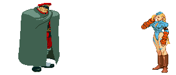
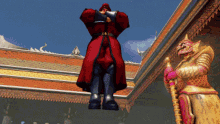
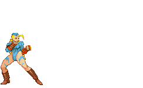
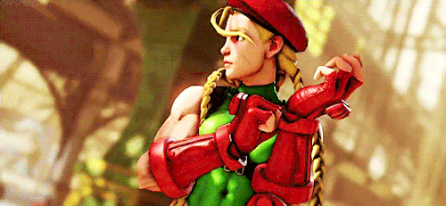
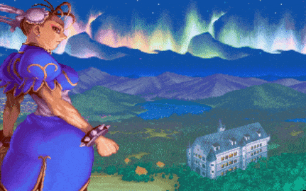
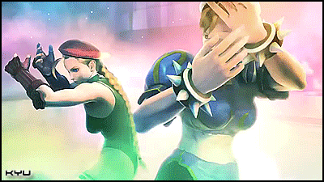
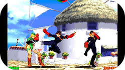
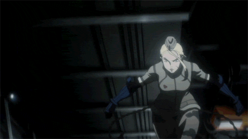
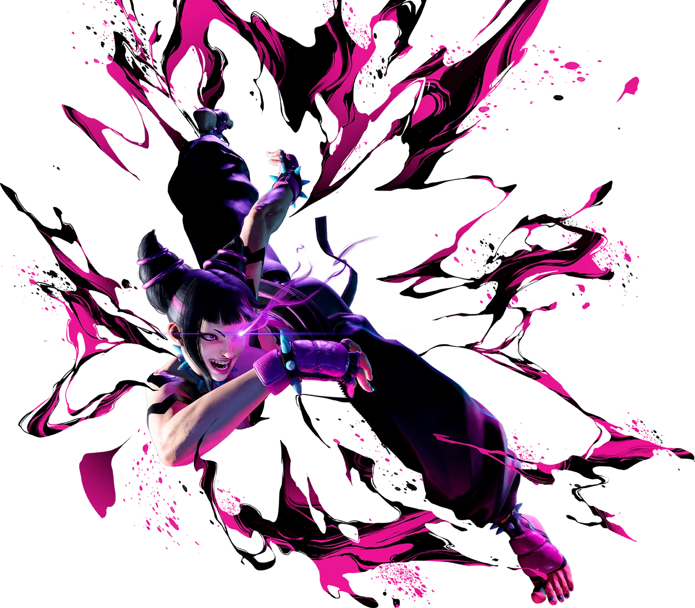

Deep Rivals and Relationships
M.Bison-creator and recurring enemy, as she's his clone.




Chun-Li (teammate and friendly rival, often linked in art and intros)




Juni & Juli (other “Dolls”/clones, forms emotional bonds post-freedom)



Juri (intense rivalry since SFIV)

